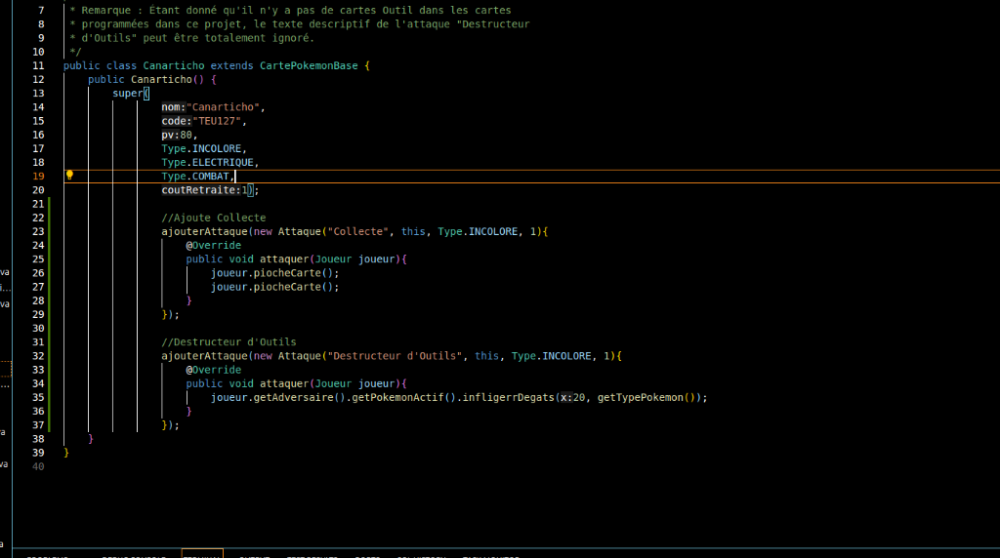
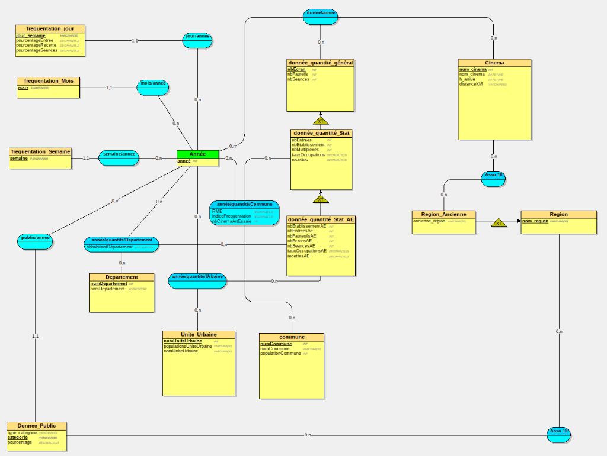

Projet : Jeu Pokémon (SAE 421)
Java • JavaFXDéveloppement complet d'un jeu Pokémon. Logique métier en Java (attaques, scénario) et interface graphique animée en JavaFX.
- Contexte : SAE Semestre 4 (4 semaines, 2025).
- Objectif & Contraintes : Respect strict de la POO et interface imposée en JavaFX.
- Équipe : 3 étudiants.
- Démarche : Conception UML poussée, implémentation incrémentale.
- Autonomie : Quasi-totale sur la gestion des événements JavaFX.

Projet : BottomUp (SAE S3)
HTML • CSS • PHP • SQL • JSDéveloppement d'une plateforme de débat et de vote. Système complet de création de questions, propositions et votes avec authentification.
- Contexte : SAE Semestre 3 (6 semaines, fin 2024).
- Objectif & Contraintes : Modèle MVC, gestion sécurisée de l'authentification.
- Équipe : 4 étudiants.
- Démarche : Modélisation globale, conception back-end et tests progressifs.
- Autonomie : Grande autonomie sur l'implémentation back-end (PHP/SQL).

Projet : Gestion de Données (SAE BD)
SQL • loopingCréation, manipulation et interrogation de bases de données complexes. Utilisation de Looping pour la conception et SQL pour l'exploitation des données.
- Contexte : Semestre 2 (3 semaines, début 2024).
- Objectif & Contraintes : Modélisation robuste, pas de redondance, utilisation de triggers.
- Équipe : Binôme.
- Démarche : Analyse, création schémas Looping, génération de scripts et requêtage.
- Autonomie : Prise en charge intégrale de l'optimisation des requêtes complexes.
Nuit
de l'Info
Projet : Nuit de l'Info (Mini Jeu)
PHP • Javascript • HTML • CSSHackathon national : Développement en équipe d'une application/mini-jeu web complet en une seule nuit blanche.
- Contexte : Hackathon national (1 nuit blanche de 15h).
- Objectif & Contraintes : Temps extrêmement court, collaboration sous pression.
- Équipe : 4 étudiants
- Démarche : Programmation rapide (MVP/quick and dirty), résolution de bugs en direct.
- Autonomie : Forte autonomie sur l'architecture Javascript et l'envoi vers l'API.